Как улучшить рекламу диллера медициского
оборудования
Приветствую вас! Давайте знакомиться. Меня зовут Дмитрий и много лет я специализируюсь на рекламе оборудования и различных B2B услуг. Я рекламировал медицинское, промышленное, сельскохозяйственное, химическое оборудование. Сегодня я расскажу вам о том, как удалось улушить рекламную кампанию диллера медицинского оборудования.
Компания является диллером медоборудования, предоставляет полный спектр медицинского оборудования и расходных материалов, есть услуга оборудования кабинетов под ключ.
Рекламные кампании клиента были настроены частично, рекламировались не все категории оборудования. Не велась работа по оптиимизации кампаний.
После анализа рекламных кампаний было принято решение изменить посадочные в рамках существующего сайта (т.е. разработка новых посадочных страниц не требовалась). Раньше реклама шла на страницы непосредственно товаров. Но при этом, в ассортименте были очень редкие аппараты, которые выпадали в статус "Мало показов". Чтобы этого избежать, товары были объединены в однородные группы. Таким образом, была изменена структура рекламных кампаний.
В результате в несколько раз вырос процент конверсии по сайту. Его изменения вы можете видеть на графике из Яндекс Метрики ниже. Видно, что процент вырос в 5 раз, с 1% до 6%.
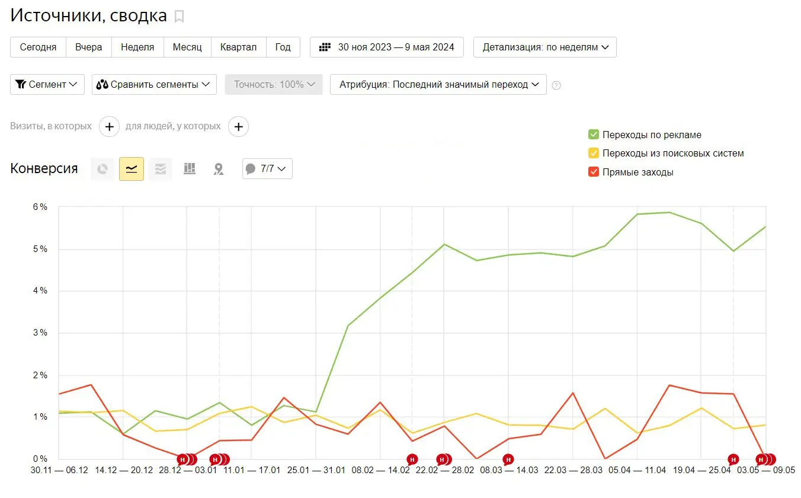Теперь посмотрим не на процент конверсии а на абсолютное количество конверсий. Оно тоже выросло значительно:
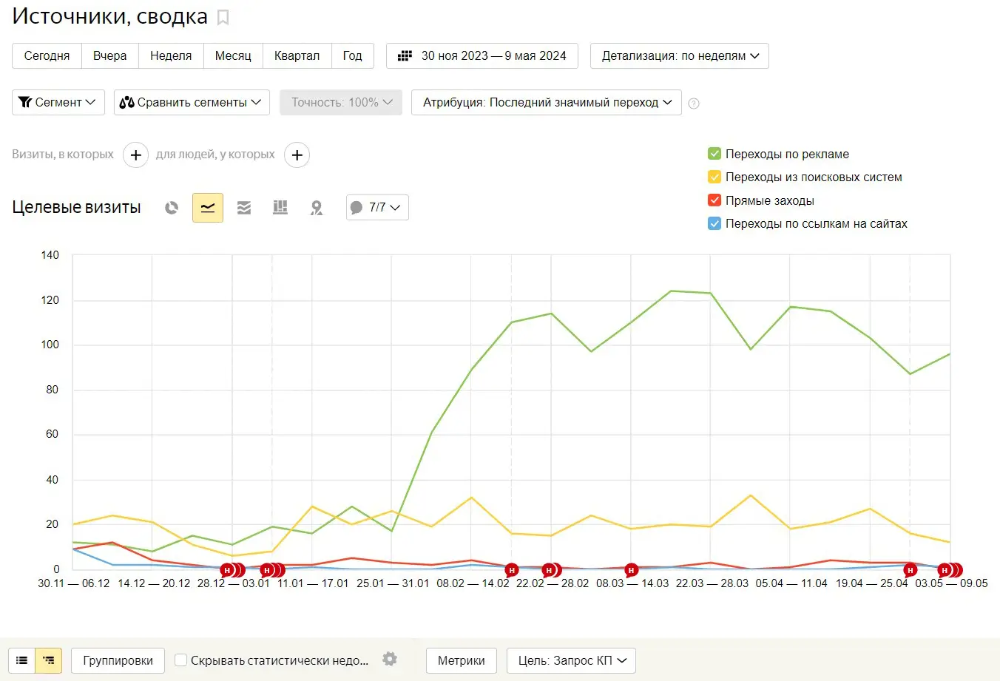Затем пришло время чистки запросов и более детальной проработки ключевых фраз.
Проблема была в то, что например в запросах по комплексному оснащению клиник и кабинетов попадались запросы с конкретными аппаратами, например ортопантомограф Gendex GXDP-700. Это было не очень хорошо, т.к. этот запрос должен был уйти в специальную кампанию "Ортопантомографы" и не портить статистику в комплексном оснащении. Таким образом, нужно было грамотно развести эти категории по рекламным кампаниям.
После работы с ключами CTR вырос в 3 раза, а количество трафика в 1,5 при сохранении той же цены клика:
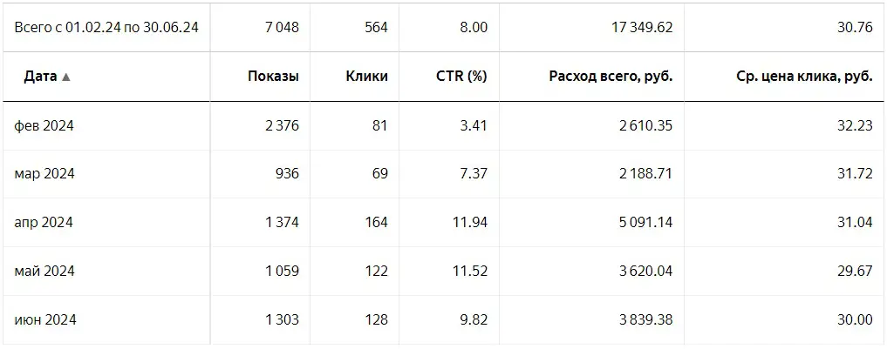Была оптимизирована кампания по реанимационному оборудованию. Старая кампания принесла 33 конверсии при бюджете 59308 рублей. Т.е. цена составил 1797 рублей за конверсию:
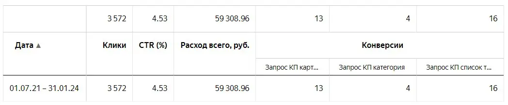Новая кампания принесла 209 конверсий при бюджете в 106549 рублей. Таким образом, стоимость одной конверсии составила 509 рублей:
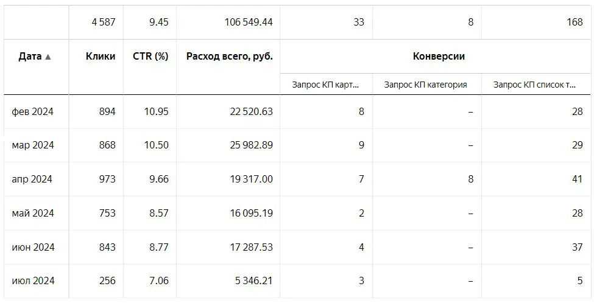Реанимационное оборудование включает в себя довольно много категорий. Оптимизацию можно покзать более детально на примере дефибрилляторов. В старой кампании упор делался на общие ключи. Да, заявки были и цена по ним была приемлема для бизнеса:
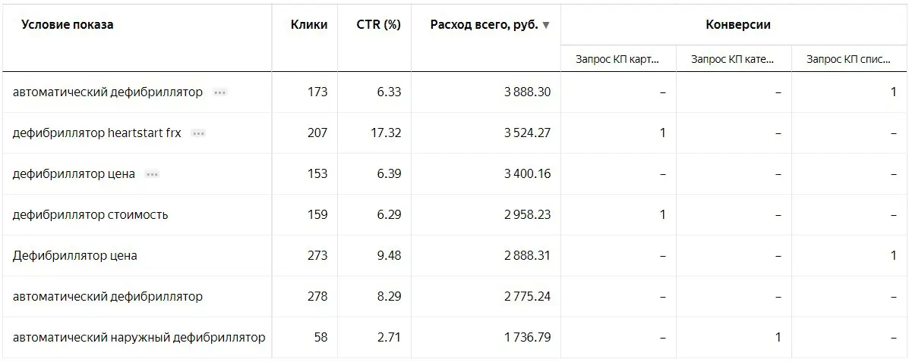В новую кампанию было введено больше ключей с конкретными моделями, в результате стоимость заявки значительно снизилась.
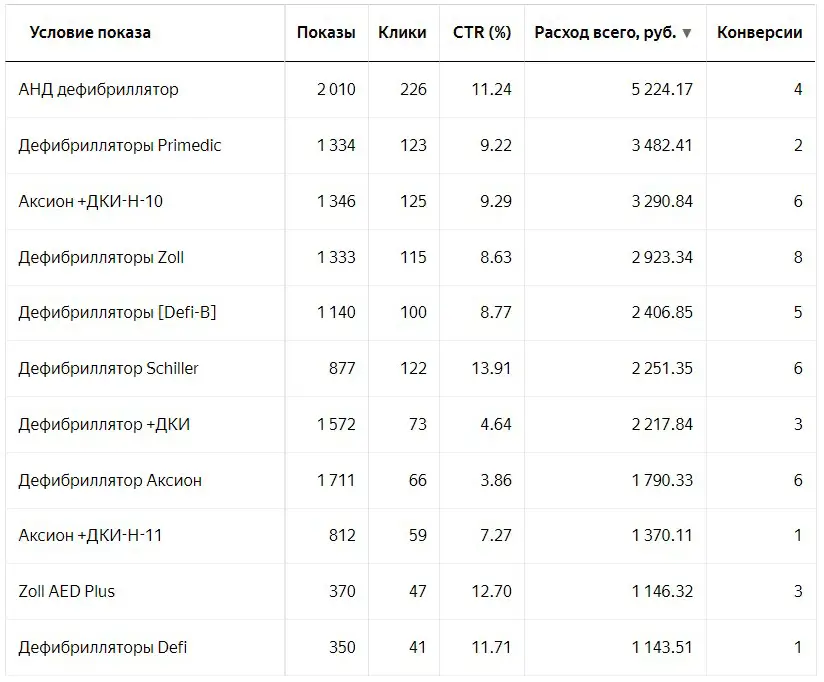В кампанию по реанимационному оборудованию были добавлены группы по ИВЛ-аппарам. Они показали следующие результаты:
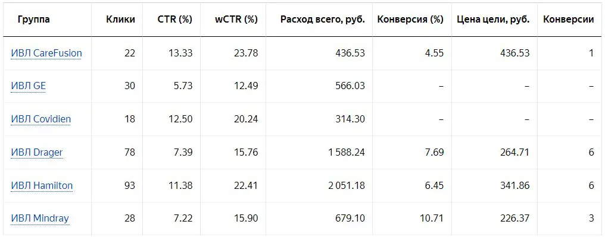Были запущены новые кампании по оборудованию для рентген-хирургии:
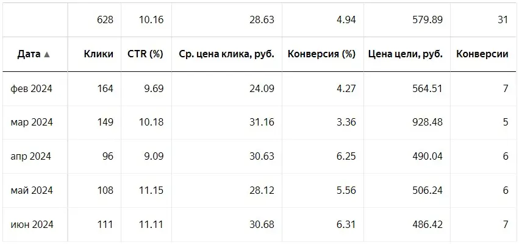И обычным рентген-аппаратам:

Результаты, как видно, оказались хорошими. Заказчик был доволен низкой ценой за заявку по новым направлениям.
Была оптимизирована кампания по УЗИ аппаратам. Старая кампания работала всего лишь 2 месяца в 2023 году и показала следующие результаты:
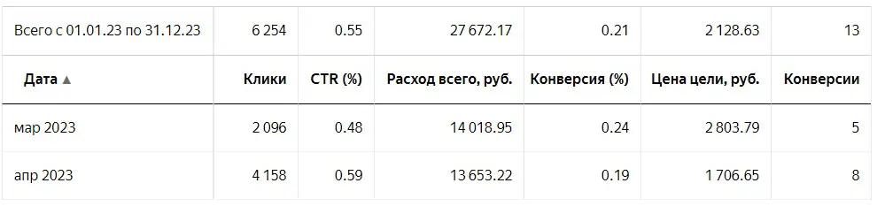Новая кампания по УЗИ-аппаратам была создана для поиска (на скринах это видно по разнице в CTR). В результате немного снизилась стоимость заявки и сильно выросло их количество:
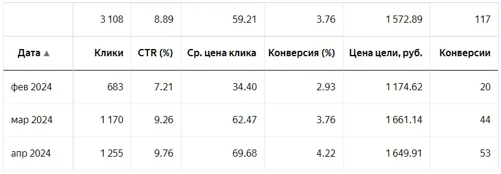В целом по этому проекту сложилась уникальная ситуация, когда рекламный трафик даёт самую высокую конверсию:
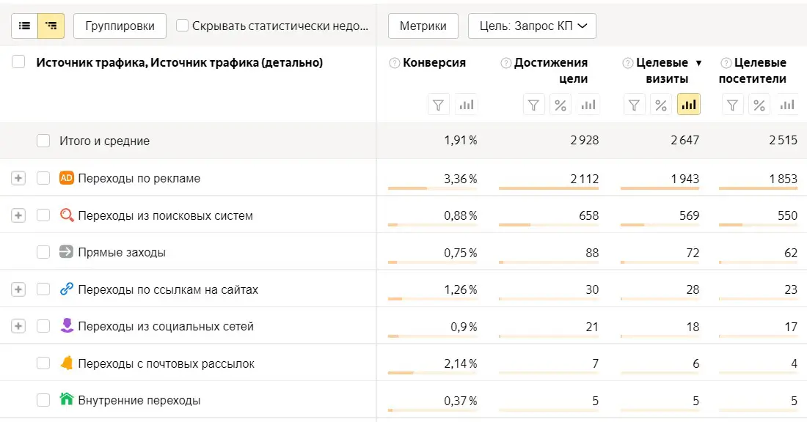Обычно рекламный трафик сильно отстаёт по уровню конверсии от поискового трафика а иногда и от трафика из социальных сетей. В этом случае он лидировал с большим отрывом. При этом, по SEO у проекта было всё в порядке, все товары были правильно заполнены и содержали достоверные заголовки, meta-теги и качественные описания.
Было бы отлично подключить к сайту электронную коммерцию и передавать данные не просто о заявках и продажах, а обладать полной информацией по среднему чеку. Увы, из-за организационных особенностей это было сделать довольно сложно. Часть клиентов не оформляли заказ на сайте. А просто запрашивали КП и дальнейшая работа велось уже с менеджерами. Требовалась модификация сайта и счётчика Метрики по инструкции в документации. Мы несколько раз обсуждали этот вопрос, но зелёный свет по нему так и не был получен.
Детальный алаиз трафика показал, что боьшинство посетителей совершают конверсию в первый визит на сайт. Небольшое количество во второй и третий, а далее качество посетителей в разрезе конверсий сильно падает:
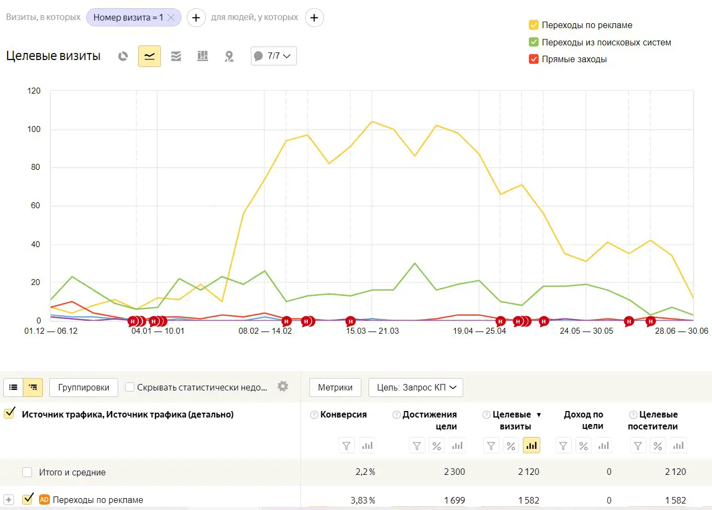При этом, вебвизор показывал достатчно большое количество посетителей, которые заходили на сайт более 10 раз:
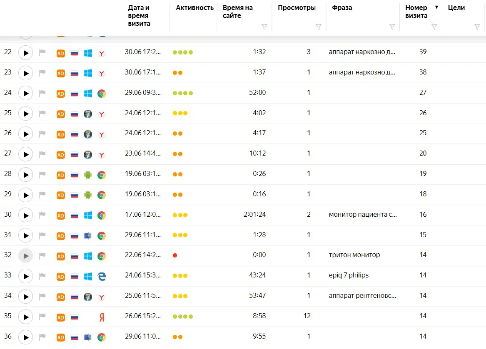Их количество было минимизировано, что тоже положительно повлияло на стоимость конверсии.
Анализ половозрасной структуры посетителей не выявил серьёзных аномалий, но интересным было то, что среди людей старше 55 лет процент конверсии был самый высокий.
Во многих случах специалисты по рекламе рекламе заранее отключают эту аудиторию, считая что "пенсионеры не покупают". Но во-первых, в этой аудитории ещё много не пенсионеров. Во-вторых, в некоторых случаях именно эти люди занимают руководящие посты и принимают решения.
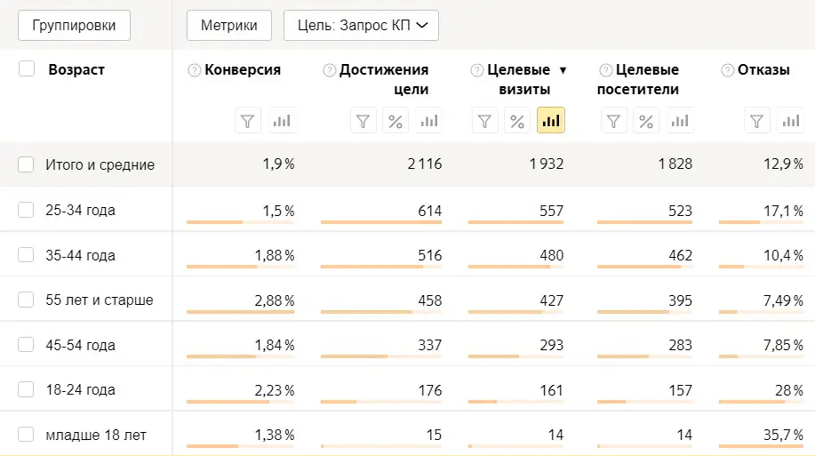На этом всё. Обоудование - оличная ниша для продвижения в Директе. За свою карьеру я работал не только с медицинским оборудованием, например тут вы можете прочитать кейс по промышленому оборудованию (тележки).
Если у вас остались вопросы, то напишите мне в личные сообщения по контактам, указанным ниже.